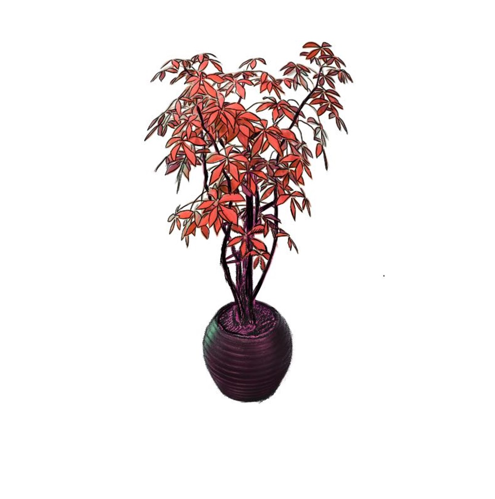
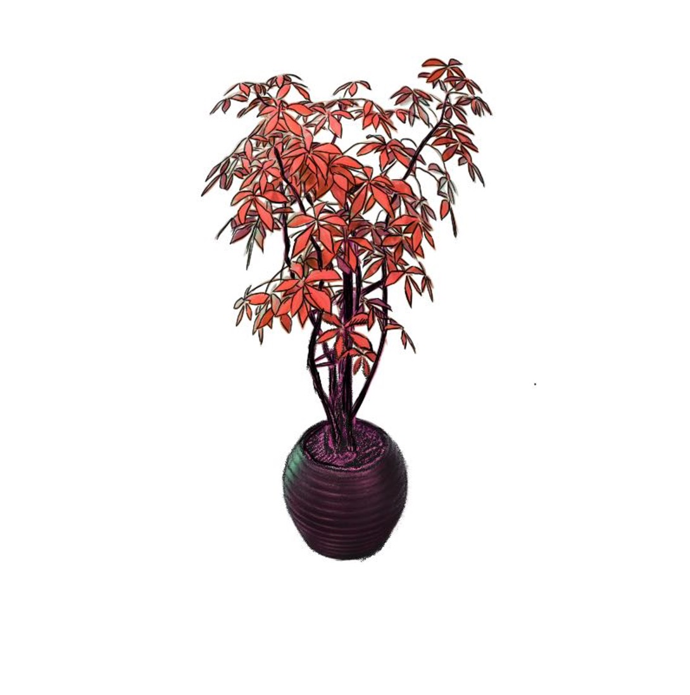
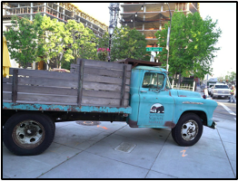
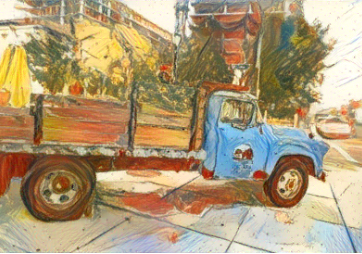

Extensions
Adaptation to 2D Stylization
Although Ref-NPR itself requires a stylized reference view, it can be extended to use arbitrary style images as reference. We use three different 2D stylization methods to generate three reference views of the same scene, each with a slightly different stylization, and then feed them into Ref-NPR to enable rendering of stylized novel views. This extension enables Ref-NPR to work with arbitrary style reference images.
Original Content
Arbitrary Style
2D Reference by NNST
2D Reference by Gatys

2D Reference by AdaIN
Appearance Editing
Added ketchup in the reference image is demonstrated properly in the stylized scene.
Controllability
This extension allows great flexibility and controllability regarding to the provided 2D reference.

Multi-Reference
Ref-NPR can be easily accommodated to multi-reference scenarios, by registering rays using all stylized reference views in R3, and by expanding the capacity of styles and content features in TCM. With two additional stylized views, better feature matching is obtained from richer style contents.
Scene with a single reference
Scene with multiple references